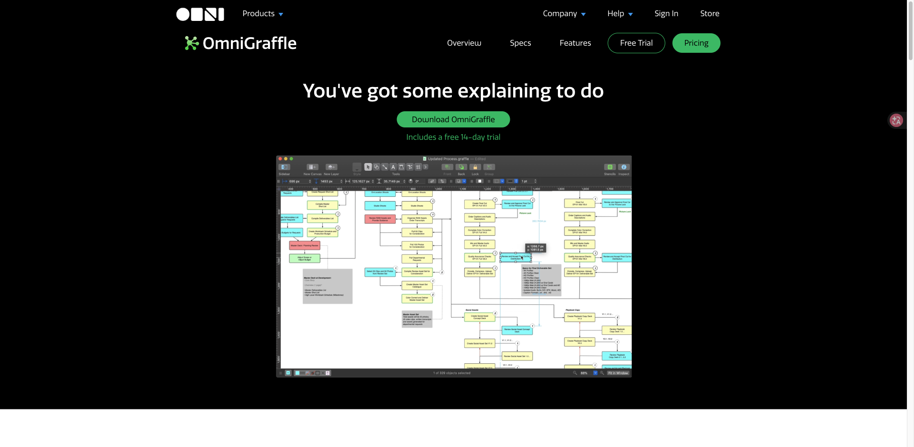

Mac 上的“印刷级”图表工具：精确到 0.1pt 的定位，和一套值得信任的图形样式。
复刻一张「iOS 应用导航结构」，右侧带 stencil 面板
OmniGraffle 的视觉语言：1px 细线、浅灰填充 + 深灰描边、字号偏小、间距克制，箭头是细长的实心三角。它最像的不是画图软件，而是一张排版好的印刷品 —— 每个对象都有精确坐标，状态栏直接报 X/Y/W/H。

Omni Group 出品的 macOS / iOS 原生图表工具，在 Mac 用户里几乎是“专业图表”的代名词。强项是精确控制：对齐、尺寸、层级、贝塞尔曲线、自定义 stencil、AppleScript / 快捷键自动化，以及和 Keynote / Pages 的导出配合。
常见用途：iOS 应用结构图、快速线框、组织架构、网络拓扑、学术示意图。